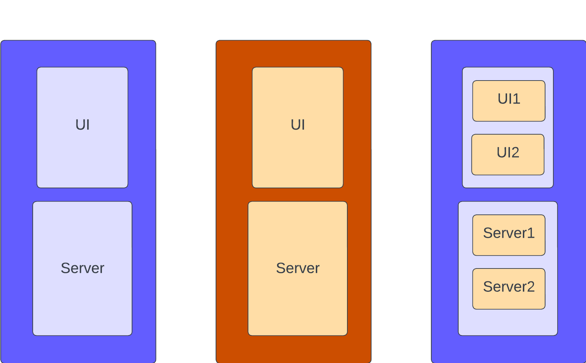
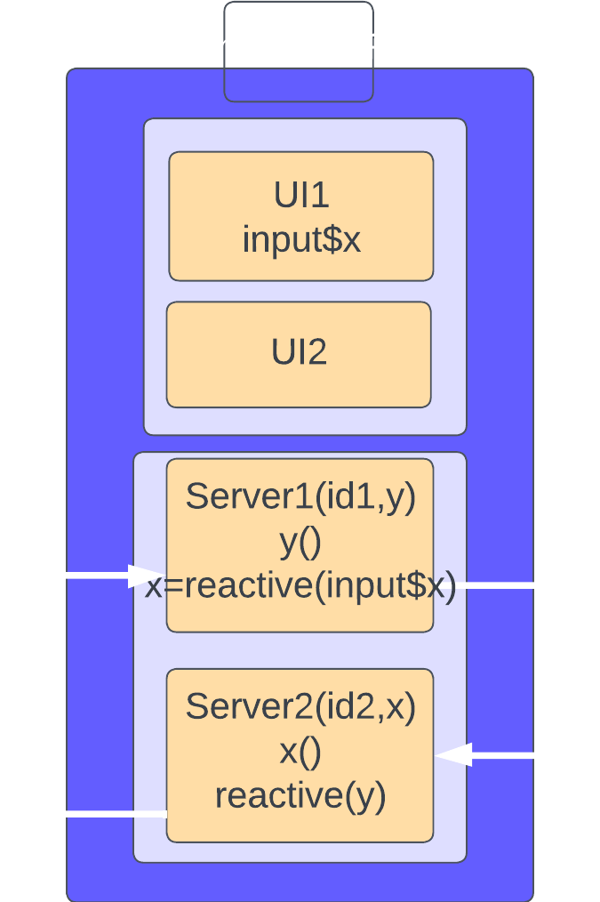
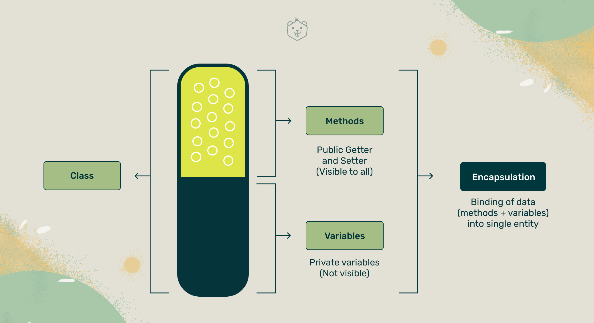

ns <- shiny::NS("cars")
ns("var")[1] "cars-var"Just the Basics

Presentation Slides: https://tmnestor.github.io/shiny_modules/CoP_modules_pres.html

library(shiny)
ui <- fluidPage(
selectInput(inputId = "var", "Variable", names(mtcars)),
numericInput(inputId = "bins", "bins", min = 1, max = 20, value = 10),
plotOutput(outputId = "hist")
)
server <- function(input, output, session) {
data <- reactive(mtcars[[input$var]])
output$hist <- renderPlot({
hist(data(), breaks = input$bins, main = input$var)
}, res = 96)
}
shinyApp(ui = ui, server = server)The Main UI function
Is replaced by
The Main Server function
Is replaced by
The Server Module is
MTCars_Histo_Server <- function(id) {
moduleServer(
id,
module = function(input, output, session) {
# code to return a response when an associated UI control changes
data <- reactive(mtcars[[input$var]])
output$hist <- renderPlot({
hist(data(), breaks = input$bins, main = input$var)
}, res = 96)
}
)
}The Modularised App is now:
MTCars_Histo_App <- function() {
#source file with MTCars_Histo_UI and MTCars_Histo_Server components
source("mod-MTCars_Histo.R")
ui <- fluidPage(
MTCars_Histo_UI("cars")
)
server <- function(input, output, session) {
MTCars_Histo_Server("cars")
}
shinyApp(ui = ui, server = server)
}
MTCars_Histo_App()ns <- shiny::NS("cars")
ns("var")[1] "cars-var"When UI controls don’t work, check if you have name spaced their UI ids

Multi_MTCars_Histo_App <- function() {
lapply(c("shiny", "zeallot"), require, character.only = TRUE)
list.files (path = "modules", full.name = TRUE) |> lapply(\(x) source(x))
ui <- fluidPage(
dataUI("dat"),
plotUI("pl")
)
server <- function(input, output, session) {
c(data, title) %<-% dataServer("dat")
plotServer("pl", data, title)
}
shinyApp(ui = ui, server = server)
}
Multi_MTCars_Histo_App()plotUI <- function(id) {
ns <- NS(id)
tagList(
numericInput(inputId = ns("bins"), "bins", min = 1, max = 20, value = 10),
plotOutput(outputId = ns("hist"))
)
}
plotServer <- function(id, data, title) {
moduleServer(
id,
module = function(input, output, session) {
output$hist <- renderPlot({
hist(data(), #reactive from calling env
main = title(), #reactive from calling env
breaks = input$bins #reactive from UI
)
}, res = 96)
}
)
}
dataManager <- R6::R6Class(classname = "dataManager",
public = list(
triggers = reactiveValues(plot = 0),
trigger_plot = function(){
self$triggers$plot <- self$triggers$plot + 1},
set_x = function(x) {
private$x = as.character(x)},
set_data = function(data) {
private$data = as.numeric(data)},
get_x = function(x) {
private$x},
get_data = function(data) {
private$data}),
private = list (x = NULL,data = NULL)
)dataUI <- function(id) {
ns <- NS(id)
tagList(
selectInput(inputId = ns("var"), "Variable", names(mtcars))
)
}
dataServer <- function(id, dataManager) {
moduleServer(
id,
function(input, output, session) {
observeEvent(input$var, {
dataManager$set_data(mtcars[[input$var]])
dataManager$set_x(input$var)
dataManager$trigger_plot()
})
})}plotUI <- function(id) {
ns <- NS(id)
tagList(
numericInput(inputId = ns("bins"), "bins", min = 1, max = 20, value = 10),
plotOutput(outputId = ns("hist"))
)}
plotServer <- function(id, dataManager) {
moduleServer(
id,
module = function(input, output, session) {
output$hist <- renderPlot({
dataManager$triggers$plot
hist(dataManager$get_data(),
breaks = input$bins,
main = dataManager$get_x())
}, res = 96)
})}# UI module ----
bootstrap_ui <- function(id) {
fluidRow(
textOutput(NS(id, "bss"))
)
}
# server module ----
bootstrap_server <- function(id, df) {
moduleServer(id, function(input, output, session) {
bss_mean <- reactive({as.character(mean(df()[["x"]]))})
output$bss <- renderText({
paste("The bootstrap sample mean is", bss_mean())
})
})
}test_demo <- function() {
boot_strap_sample <- data.frame(x = sample(x = 1:10,
replace = TRUE,
size = 20))
ui <- fluidPage(bootstrap_ui("x"))
server <- function(input, output, session) {
session$onSessionEnded(stopApp)
bootstrap_server("x", reactive({boot_strap_sample}))
}
shinyApp(ui, server)
}
# test_demo()setwd(here)
source("./app5.R")
shinyApp(ui, server)ui <- fluidPage(
# Calling Environment
actionButton("submit", "Press me"),
h4("Count Regular"),
textOutput("count"),
# Called Environment
reactive_count_module_ui("count_module")
)
server <- function(input, output, session) {
session$onSessionEnded(stopApp)
# Calling Environment
output$count <- renderText(as.character(input$submit))
# Called Environment
reactive_count_module_server("count_module",
action = reactive(input$submit))
}reactive_count_module_ui <- function(id){
ns <- NS(id)
return(
tagList(
h4("Modulized Count"),
textOutput(ns("count_inside")),
h4("Is Modulized Count Odd or Even?"),
textOutput(ns("odd_even"))
))}
reactive_count_module_server <- function(id, action) {
moduleServer(
id,
module = function(input, output, session) {
output$count_inside <- renderText(as.character(action()))
temp_text <- eventReactive(action(), {
ifelse(action() %% 2 == 0, return("even"), return("odd"))
})
output$odd_even <- renderText(temp_text())
})}